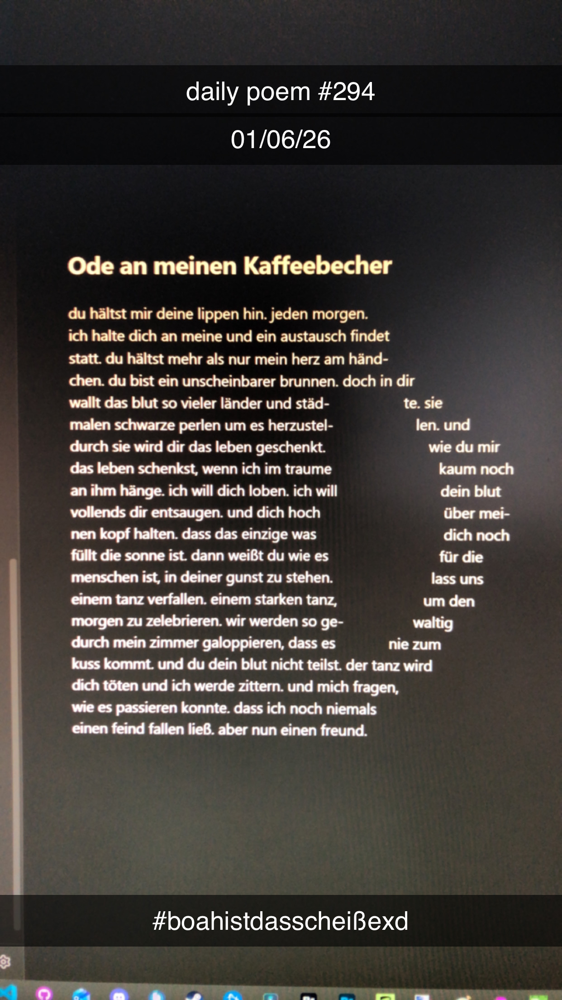

Ode an meinen Kaffeebecher
[294]du hältst mir deine lippen hin. jeden morgen.
ich halte dich an meine und ein austausch findet
statt. du hältst mehr als nur mein herz am händ-
chen. du bist ein unscheinbarer brunnen. doch in dir
wallt das blut so vieler länder und städ- te. sie
malen schwarze perlen um es herzustel- len. und
durch sie wird dir das leben geschenkt. wie du mir
das leben schenkst, wenn ich im traume kaum noch
an ihm hänge. ich will dich loben. ich will dein blut
vollends dir entsaugen. und dich hoch über mei-
nen kopf halten. dass das einzige was dich noch
füllt die sonne ist. dann weißt du wie es für die
menschen ist, in deiner gunst zu stehen. lass uns
einem tanz verfallen. einem starken tanz, um den
morgen zu zelebrieren. wir werden so ge- waltig
durch mein zimmer galoppieren, dass es nie zum
kuss kommt. und du dein blut nicht teilst. der tanz wird
dich töten und ich werde zittern. und mich fragen,
wie es passieren konnte. dass ich noch niemals
einen feind fallen ließ. aber nun einen freund.
